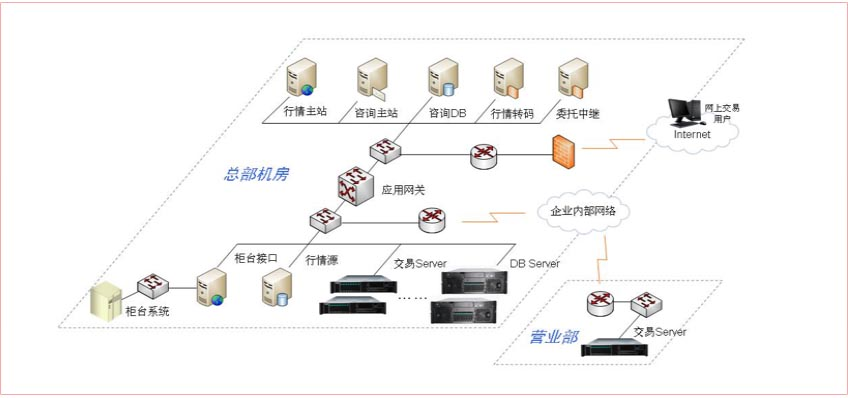
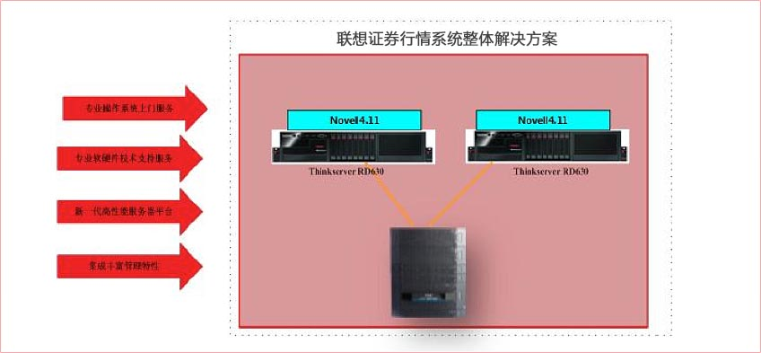

Novell Netware系统具有可靠性和安全性，在中国证券行业市场占有率极高，其主要应用于券商营业部的行情服务器，随着Novell公司的变迁，国内证券Novell用户还一直停留在Novell 4.11版本阶段。虽然Novell Netware 4.11用时间证明了其优秀的可靠性和安全性，但由于早期部署Novell的服务器多数已经老化，性能也不能满足当前业务的要求，所以升级更换已经迫在眉睫。随着硬件的不断升级，旧操作系统与新服务器硬件兼容性的问题就日渐显现出来。从目前的市场看，新一代服务器能支持Novell 4.11的厂商寥寥无几。而实际上除大量老设备急需更换外，由于新建营业部不断增多，在证券行业还有着不少Novell行情服务器的需求，这也是当前券商和服务器厂商最为头痛的问题。
为了帮助客户解决这一难题， 联想服务器在每一代产品升级时均做了专门针对novell4.11系统的兼容性测试和稳定性测试，推出能支持novell4.11的证券专供服务器。联想ThinkserverRD630是E5-2600平台的联想证券专供机服务器，它延续了上一代产品R520G7继续支持Novell4.11的优势，同时又具备高性能、高可靠性和高稳定性等特点。长江证券行情系统采用联想Thinkserver RD630服务器平台，配置两颗E5-2609处理器，4GB内存，2块300GB硬盘做Raid1镜像保护，安装Novell操作系统。拓扑如下：
联想Thinkserver系列服务器不但突破了在E5-2600平台上安装Novell操作系统的技术瓶颈，解决了Novell给客户带来的技术壁垒，而且由联想提供的完善、高品质的售后服务支持也给用户的使用消除了后顾之忧。该方案由两台联想Thinkserver服务器和一台存储构成，两台服务器上安装Novell4.11操作系统，采用一主一备的模式进行工作，当主服务器出现宕机等意外时备服务器可以接管主服务器的业务继续提供服务。部分重要的数据可以存放于后端的存储当中，这样即便服务器出现故障也不会造成客户数据丢失，保证了业务数据的完整性和安全性。
联想Thinkserver证券专供服务器具备高性能、高可靠性和高稳定性等特点，再配合客户Novell4.11操作系统及业务系统，实现各营业网点行情服务器的快速部署和业务升级，新系统为长江证券行情客户提供了更高性能的平台，又提升了券商市场反应能力，以及更为便捷和安全的服务。
2005年至今，联想集团为长江证券公司提供了几百套服务器产品，应用在包括证券行情系统、网上交易系统、应用处理中间件(AS)、通信中间件(AR)、报盘系统、股指期货系统、证券软件产品研发等领域。联想ThinkServer服务器凭借卓越的性能、可靠的品质、出色的服务，赢得了客户的信任，坚定了长江证券公司与联想服务器继续保持紧密合作的信心。